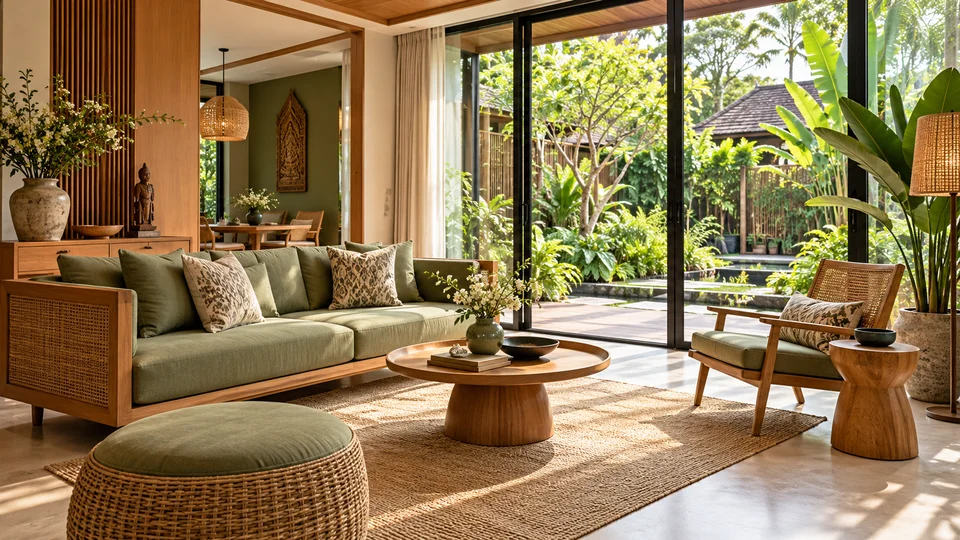
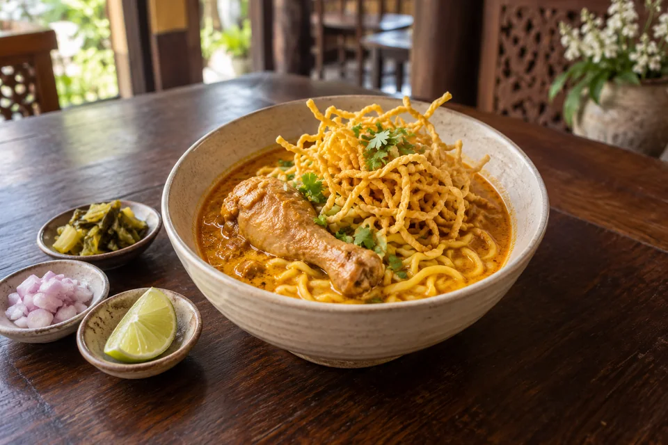

01 / POOL PARTY
함께 뛰어드는 풀파티.
풀장 곁에서 만나고. 음악에 맞춰 함께 즐기고.

BUSINESS VALLEY / CHIANG MAI
글로벌 커뮤니티 비전전 세계 디지털노마드와 자유롭게 만나고.
소통하고 협력하고. 도모하고. 스타트 업!
MYLODGE / AT A GLANCE
일도, 휴가도. 원하는 장면부터 만나보세요.
01 / CELEBRATE TOGETHER
사람과 음악, 새로운 만남. 함께 즐기는 휴가의 열기.
01 / POOL PARTY
풀장 곁에서 만나고. 음악에 맞춰 함께 즐기고.

02 / CLUB NIGHT
국경을 넘어 어울리고. 같은 리듬으로 춤추고.
02 / THE SPACES
풀파티·사업가 교류·세계 음식·별장·마켓·웰니스. 치앙마이를 즐기는 여섯 가지 경험.
INTERIOR / DESIGN DIRECTIONS
공간마다 다른 색과 소재, 세 가지 인테리어 콘셉트를 만나보세요.

ASIAN FUSION
우드와 라탄, 셀라돈의 색으로 담은 편안함.

EUROPEAN CONTEMPORARY
밝은 석재와 부드러운 곡선이 만드는 여유.

DYNAMIC GLOBAL
과감한 색과 다양한 소재로 채운 개성.
03 / SIGNATURE SCENES
일과 휴식, 새로운 만남. 내가 바라던 치앙마이의 하루.

아이디어를 나눌 동료. 함께 도모할 파트너. 일과 휴식을 넘나드는 글로벌 커뮤니티.

아메리카·유럽·중동·아프리카·아시아의 맛을 나누고. 식탁에서 시작되는 새로운 만남.

먹거리부터 손길이 담긴 소품까지. 보고, 맛보고, 고르는 즐거움.

풀장 곁 햇살 아래. 몸을 펴고 숨을 고르는 나만의 시간.
마사지·스파 등 별장 밖의 웰니스도 여행의 선택지입니다.

나무 그늘을 따라 걷고. 초록 풍경 곁에서 천천히 쉬고.
04 / LOCAL DISCOVERIES
북부 태국의 한 그릇부터 손길이 담긴 공예까지. 별장 밖에서 만나는 치앙마이.

로컬푸드 / KHAO SOI
코코넛 커리 국물에 달걀면과 바삭한 튀긴 면을 더한, 치앙마이를 대표하는 한 그릇.

로컬푸드 / SAI UA
레몬그라스와 라임 잎, 향신료를 넣어 구운 북부 태국식 돼지고기 소시지. 찰밥을 곁들여 현지의 맛을 즐겨보세요.
MADE IN CHIANG MAI

지역 공예 / BO SANG UMBRELLAS
대나무 살과 사(Saa) 종이, 손으로 그린 문양. 치앙마이 보쌍 마을이 이어온 우산 공예를 만납니다.
지역 공예 / CELADON
은은한 녹색 유약이 돋보이는 도자기. 치앙마이 공예의 멋을 일상에 담아보세요.

치앙마이 지역의 음식과 공예를 소개합니다.
BUSINESS VALLEY / WORK TOGETHER
개발자·창업가·크리에이터가 일하고 배우며, 다음 프로젝트를 함께 도모하는 곳.
WORK / PREPARING
노트북 하나로 집중하는 낮.
독립된 작업과 짧은 대화가 함께 가능한 업무 공간을 준비합니다.
LEARN / PREPARING
기술과 아이디어를 나누는 모임.
BUILD / PREPARING
개발자·창업가·크리에이터가 만나 함께 도모하는 일.
관심 분야와 참여 조건을 바탕으로 연결합니다.
CHIANG MAI / DAY TO NIGHT
일하고, 맛보고, 만나고, 즐기고. 오래 머물수록 나만의 하루가 다양해지는 곳.
DAY / WORK & REST
코워킹에서 집중하고, 카페에서 대화를 나누고, 풀사이드에서 쉽니다.
일과 휴가를 하나의 리듬으로 연결합니다.
EVENING / FOOD & CONVERSATION
태국 로컬 음식에서 유럽·아메리카의 메뉴까지.
식탁에서 만난 이웃과 취향을 나누고 다음 모임으로 이어갑니다.
NIGHT / MUSIC & COMMUNITY
풀파티·클럽·DJ·바비큐가 있는 저녁을 그립니다.
혼자 와도 관심사가 맞는 사람들과 어울릴 수 있는 모임을 준비합니다.
VACATION / ALWAYS ANOTHER POSSIBILITY
단지에서 즐기는 하루와 별장 밖의 지역 경험을 구분해 골라보세요.
단지 내 구상
카바나에서 쉬고, 풀사이드에서 어울리기.
단지 내 구상
클럽·음악 라운지에서 저녁의 리듬 즐기기.
단지 내 구상
아시아·유럽·아메리카의 맛 만나기.
단지 내 구상
IT·창업의 관심사를 가진 이웃과 대화하기.
별장 밖 지역 경험
별장 밖 마사지·스파로 나를 돌보기.
별장 밖 지역 경험
현지 음식·마켓·공예를 발견하기.
CONCIERGE / LIVE LIGHTER
도착 준비부터 이동·장보기·야외의 저녁까지, 별장 생활의 편의를 살펴보세요.
01 / CONCIERGE
새집처럼 말끔한 도착을 위한 청소·침구·세팅.
02 / CART
별장과 공용 공간 사이를 오가는 탑승형 전동 카트.
03 / MARKET
먹거리와 생활용품을 가까운 마켓에서 고르세요.
04 / DELIVERY
필요한 물품을 받아, 장보기보다 휴가에 집중하세요.
05 / BARBECUE
바비큐를 굽고 대화를 나누는 저녁.
06 / CAMPFIRE
캠핑의 즐거움과 불빛을 둘러앉아 나누는 이야기.
OWNER / MORE THAN A STAY
01 / SHARE A DAY
나의 별장에서 보내는 하루를 소중한 지인에게.
02 / SWAP
다른 지역 오너와 나누는 새로운 여행의 경험.
03 / UNDERSTAND YOUR TERMS
소유의 의미와 실제 이용 범위를 구분해 살펴보세요.

MYLODGE / GLOBAL BUSINESS COMMUNITY
휴양지에서 만난 동료와 파트너.
소통과 협력으로 이어지는 글로벌 비즈니스 커뮤니티.